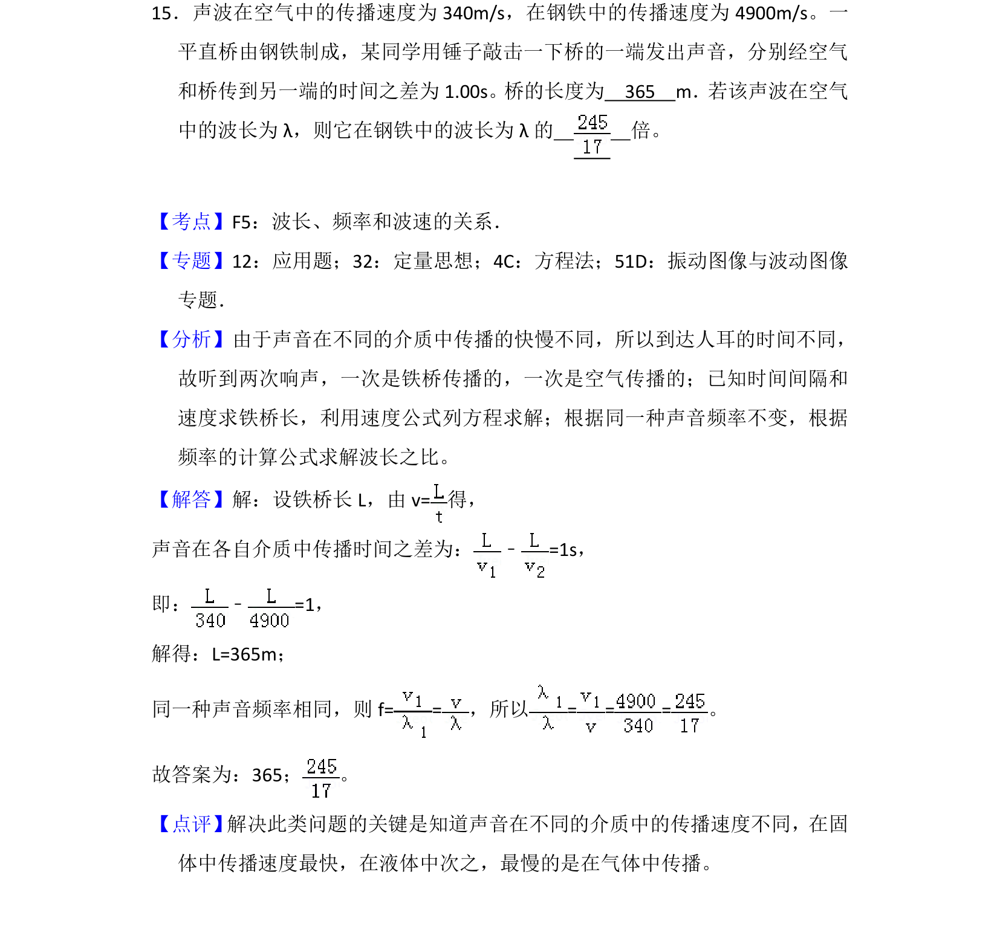
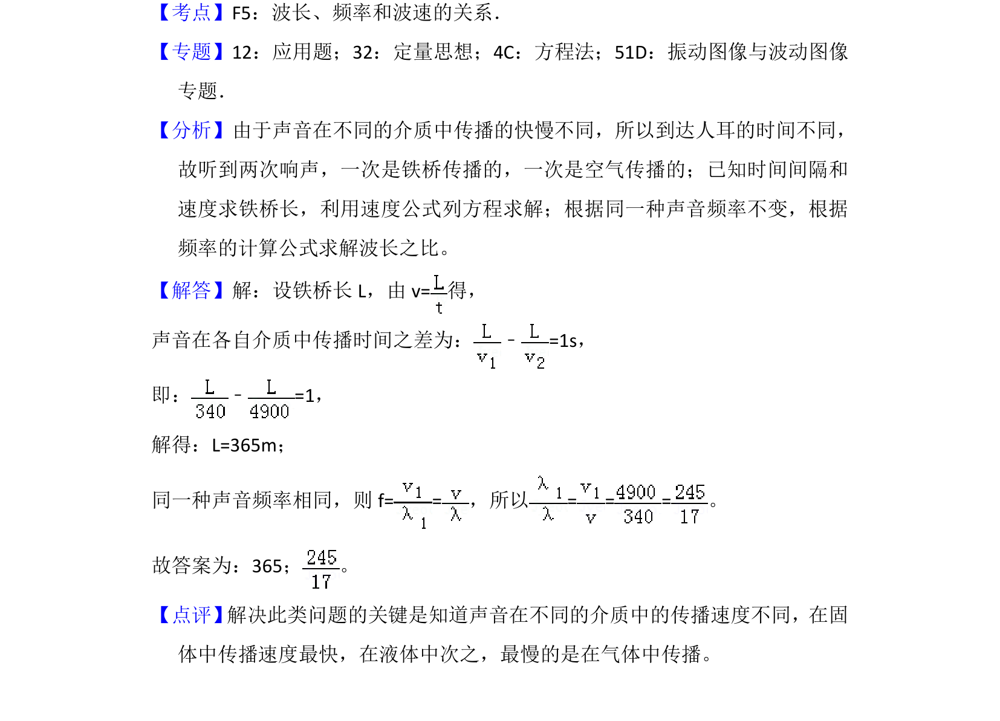

考点：波长 频率 波速

该题考查声波在不同介质中传播的速度、时间差、波长与频率的关系及计算。

📄 原 PDF 第 19 页：
素材/真题/吉林/2008-2024·（吉林）物理高考真题/2018年高考物理试卷（新课标Ⅱ）（解析卷）.pdf
15．声波在空气中的传播速度为340m/s，在钢铁中的传播速度为4900m/s。一 平直桥由钢铁制成，某同学用锤子敲击一下桥的一端发出声音，分别经空气 和桥传到另一端的时间之差为1.00s。桥的长度为 365 m．若该声波在空气 中的波长为λ，则它在钢铁中的波长为λ的 倍。
【考点】F5：波长、频率和波速的关系．菁优网版权所有 【专题】12：应用题；32：定量思想；4C：方程法；51D：振动图像与波动图像 专题． 【分析】由于声音在不同的介质中传播的快慢不同，所以到达人耳的时间不同， 故听到两次响声，一次是铁桥传播的，一次是空气传播的；已知时间间隔和 速度求铁桥长，利用速度公式列方程求解；根据同一种声音频率不变，根据 频率的计算公式求解波长之比。 【解答】解：设铁桥长L，由v=得， 声音在各自介质中传播时间之差为：﹣=1s， 即：﹣=1， 解得：L=365m； 同一种声音频率相同，则f= =，所以= = =。 故答案为：365； 。 【点评】 解决此类问题的关键是知道声音在不同的介质中的传播速度不同，在固 体中传播速度最快，在液体中次之，最慢的是在气体中传播。